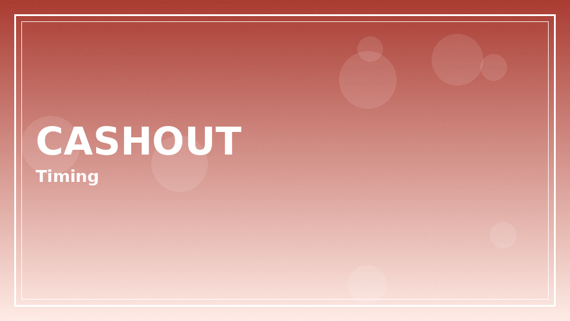
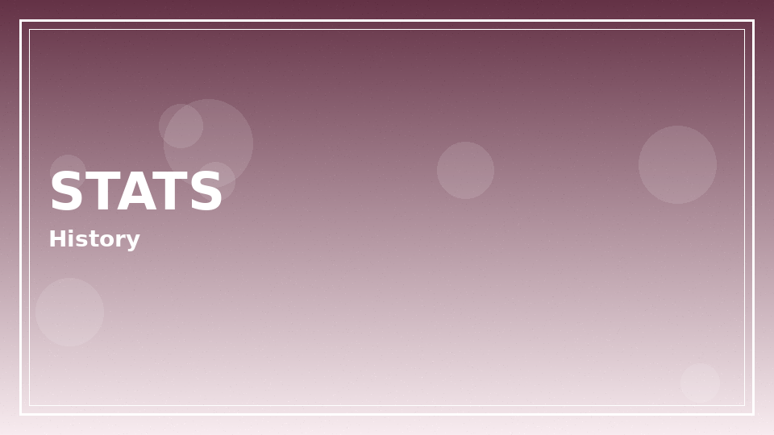

What 1win Aviator is
1win Aviator is a crash-style instant game: a multiplier rises until the round ends, and players who cash out earlier lock the value shown at that moment. Those still in when the round crashes lose the stake for that round. The appeal is speed; the hazard is emotional decision-making under time pressure.
Ready to explore 1win aviator on the official operator site? Review the live offer details before you deposit.
18+ only. Bonus wagering requirements, minimum deposit amounts, offer expiry windows, and game contribution rates vary — see operator T&Cs on the signup page before claiming any promotion. Gambling involves risk; never stake more than you can afford to lose.
Round flow and controls
- Set a stake within your pre-committed budget.
- Optionally set an automatic cash-out threshold if the client offers one.
- Watch the multiplier climb; manual cash-out is available until the crash.
- Review the round history panel without treating it as a prediction engine.

- Auto cash-out reduces hesitation but does not improve expected value.
- Doubling stakes after a loss is a common path to overspending.
- Sound effects can heighten urgency — mute them if they push impulsive taps.
Demo first, real stakes later

If a practice mode is available inside 1win Aviator, use it to learn the interface. Demo credits have no cash value, which is exactly why they are useful for understanding timing without financial stress.
| Goal | How | Done when |
|---|---|---|
| UI fluency | Place and cancel bets in demo | No mis-taps |
| Auto cash-out | Test thresholds | You know where the control lives |
| History panel | Observe variance | You stop reading patterns as destiny |
Statistics panels are not crystal balls

Seeded history charts show what already happened. They do not oblige the next multiplier to be “due.” Treating cool-looking streaks as forecasts is a fast way to abandon your bankroll plan.
| Habit | Healthy approach | Unhealthy approach |
|---|---|---|
| Stake size | Fixed unit | Escalating after losses |
| Session length | Time-boxed | Open-ended chasing |
| Chat tips | Ignore tips that sell certainty | Copy strangers' claims |
| Breaks | Scheduled | Skipped when losing |
Psychology of rising multipliers
1win Aviator compresses hope into a short climb. The graph line is a powerful visual because humans read rising slopes as progress even when the underlying process is memoryless from round to round. Reminding yourself of that memoryless property out loud before a session sounds silly and works surprisingly well.
Social proof in the chat — other account names cashing out — can pressure you to hold longer. Those names are not your budget. Mute chat if needed. Autopilot imitation is how bankrolls vanish in twenty minutes.
Near-miss feelings happen when the crash occurs just above a threshold you almost set. Near misses are not evidence you should raise stakes. They are designed emotional events. Take a sip of water and return to your written unit size.
Two-bet strategies that place a safe cash-out beside a speculative hold are marketed as clever. Mathematically they still operate inside the same edge framework; they mainly allocate variance across two lines. If the complexity makes you lose track of total exposure, simplify to one bet.
Streaming personalities may show large cash-outs because variance and selective editing favour highlight reels. Do not calibrate your expectations to someone else’s edited night. Calibrate to your envelope.
If you notice your heart rate spiking, that is physiological data. Pause. Crash games are optional. Football highlights will still be on television without a simultaneous multiplier climb on your phone.
Technical fairness concepts in plain English
Provably fair tooling, when present, lets you verify that a server seed was not altered after the fact. Verification is about integrity of the random process, not about predicting profitable moments. Learning the verify button is worthwhile; mistaking it for a forecasting tool is not.
Client lag can make cash-out taps feel delayed. On unstable connections, prefer auto cash-out thresholds you chose calmly before the round. Manual taps during congestion are how accidental full losses happen while you still see an old multiplier frame.
Extended notes for aviator readers
Additional context for the aviator guide: adults reading from Argentina benefit from slow decision-making, written budgets, and a refusal to treat marketing banners as advice. Take ten quiet minutes before any deposit to list why you are opening the cashier at all.
Keep a simple ledger for a fortnight. Write dates, amounts, and product types. Patterns appear quickly — late-night crash games, salary-day spikes, or live football overreactions. Once visible, patterns are easier to change with deposit caps and app timers.
If a session stops being fun, end it without negotiating with yourself. Entertainment that requires a pep talk to continue is no longer entertainment. Use the responsible gambling block links when unease turns into distress.
Cross-read related hub pages instead of searching random screenshots. Internal articles on casino, app, login, bonuses, Aviator, Argentina context, and legality exist to answer different questions without repeating the same paragraph everywhere.
Finally, remember affiliate disclosures: sponsored links may earn this site a commission. That commercial fact does not change maths, law, or your household budget. Your constraints stay yours.
Revisit these reminders monthly. Habits drift. A calendar note labelled ‘budget review’ is a small tool with outsized value for anyone who wants play to remain optional and calm.
Practical checklist readers can save
Save this checklist somewhere offline: confirm official domain, set a deposit ceiling, enable stronger authentication where available, read wagering contribution rules before claiming promotions, and schedule a hard stop time. Tape the stop time next to your monitor if needed.
When travelling between provinces or abroad, re-check whether access rules and payment rails still match your expectations. Do not assume yesterday’s cashier equals today’s. Screenshots age poorly.
Talk about money stress early. Friends, family, or free support organisations can interrupt spirals that private shame extends. Seeking help is a strength move, not a spectacle.
Keep software updated on phones and laptops. Many account takeovers start with outdated browsers or malicious lookalike apps rather than clever password guesses alone.
Use separate browser profiles for everyday browsing and for any gambling logins if that mental separation helps you notice when you are about to break a limit.
Review open bets and unfinished bonus trackers before bed. Unfinished mental loops cause night-time checking. Closing loops deliberately protects sleep.
If you disagree with a settlement, gather evidence calmly and contact official support with timestamps. Parallel raging on social networks rarely improves outcomes and sometimes spreads personal data you meant to keep private.
Bankroll math without mystique
Decide a maximum number of rounds and a maximum total loss before opening 1win Aviator. Crash games compress many decisions into minutes, so a “small” stake can still burn a weekly entertainment budget if you spam rounds.
- Separate Aviator funds from sports bets for clearer tracking.
- Read parallel notes on the casino lobby if you hop between products.
- Keep bonus wagering rules in mind — crash games may contribute differently.
- Use support resources if the pace feels compulsive.
- Write the loss cap on paper — not in a forgotten notes app.
- Prefer fewer rounds with attention over dozens of distracted taps.
- Stop after a win target just as firmly as after a loss cap.
- Never borrow money to continue a crash session.
| Field | Example discipline |
|---|---|
| Max loss | Pre-set entertainment amount only |
| Max rounds | Hard number, not 'until bored' |
| Stake unit | Small % of the session pot |
| Cool-down | App closed + 15 minute break |
18+. This site publishes informational content for adults only. Gambling can be addictive — set limits, take breaks, and seek help if play stops being fun.
- Support and education: BeGambleAware
- Advice and treatment pathways: GamCare
If you feel play is becoming stressful, pause and contact free support resources. Nothing on this page is financial advice.